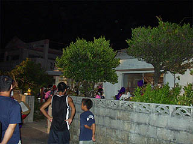
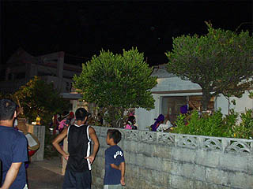

八重山の盆行事/沖縄県石垣市、与那国町
夏の沖縄！といえばビーチでリゾート。しかし夏といえばお盆の行事も見逃せない。
てなわけで日本最西端の島、与那国島に行って来たよ。
(写真はイメージです）
沖縄の盆行事といえばエイサー。本土の盆踊りみたいな意味合いがある。
元々は念仏歌だといわれているが、今では芸能色が強く、勇壮な若者の踊りといった感じだ。
ここ、与那国島ではお盆の夜、島の中心部で各地区のエイサーが披露される。
一言でエイサーといっても各地区で踊りや衣装や音楽が違う。それぞれ若者が中心となってイキの良いエイサーが次々と続く。
そんなエイサー大会も一段落し、島の中心部の祖内地区では夜になると続々と人が集まってくる。
トラックの荷台に乗ったエイサー軍団もやってくる。
実は、このエイサー隊、各家を回るのだという。
いくら小さな島といっても人口1800人以上、祖内だけでも1000人以上、世帯数も500戸程あるという。
その内仏壇のある家を一件一件、3日間かけて訪問するというのは尋常ではない。かなりのハードスケジュールではなかろうか。
 

お、もう始まってます。
エイサー隊の主な構成は小太鼓を持った男組と艶やかな着物の女組、そして三線（三味線）と歌い手のサウンド組。
皆さん踊りながらズカズカと仏間に上がり込んで何曲か歌って踊って去って行く。
勿論最後は家の人も交えての大カチャーシー（フリースタイルで思い思いに踊りまくる感じですな）大会。
エイサー隊が去った後はまるで台風一過のようだ。
翌日、島の方から伺った話では、島には若者が少ないのでエイサーをする若者を集めるのが大変だ、との事。
沖縄本島に比べると年令はやや高めだというのも若者不足と無縁ではなかろう。
ちなみに本土から移住してきた人とかもじゃんじゃんエイサー隊に組み込まれるそうな。
ちなみに本島では家に上がり込む事は少ないそうである。
元々エイサーは沖縄本島で盛んに行われていた盆行事だという。従ってこの与那国島のエイサーも歴史は比較的浅いのかも知れない。
とすれば個々の家を訪れるエイサーのスタイルはもしかしたら別の祭の影響なのかも知れない（下記の祭を見てそう思った）。
エイサーについて詳しい事は何も知らないので、あくまでも個人的な憶測だが。
一方、こちらは八重山諸島の中心である石垣島。
この石垣島ではアンガマという盆行事が島内のあちこちで執り行われる。
ここも与那国のエイサーと同じように個人宅を一件一件回る。
しかしアンガマが来るのは新盆の家だけだ。
盆の少し前になると地元の新聞に「○○青年会○月○日○時○○町○○家」といった具合にアンガマが行われる場所が掲載される。
で、石垣市の数軒の家にお邪魔してみた。
新聞に掲載された家に行ってみると、既に仏間には家人がアンガマ隊のお越しをお待ちしていた。
驚いた事に庭には椅子が並べられていた。つまり一般の観光客や近所の人達も見てくれや、的なウエルカム状態になっている。
しばらく待っていると三線と太鼓を鳴らして地元の青年会で構成されるアンガマ軍団がやってきた。
アンガマはあの世からの遣いという事になっているそうだ。
したがって主役の男女のアンガマは仮面を被り、踊り手や楽隊も花笠、手拭で顔を隠している。
さて、いよいよ全員仏間に上がり込み、アンガマパーティーの始まりである。
まずは仏壇にてアンガマ爺（ウシュマイ）とアンガマ婆（ウミー）が念仏（だと思う）を唱えて御挨拶。
アンガマはあの世の人という設定だからだろうか、その声はわざとかん高い裏声で話す。
念仏を唱えた後、アンガマ爺と婆が二人で話しはじめる。その内容はまるで掛け合い漫才である。
（かん高い裏声で）「今日は、あの世からANAで来たけど、やっぱりJALの方が揺れないでいいなァ〜」みたいな感じです。

そうこうしている内にアンガマ爺婆をはじめ数人づつ中央に出て踊り始める。
その時周りに座っている花笠隊が全員座ったまま首を左右に振り出す。カブドットコムのCFみたいでかなり面白かったです。
さらに乗ってくるとアンガマへの質問タイム。縁側に出て、庭にいるギャラリーから質問を受ける。
勿論質問する方もかん高い裏声で話さなければならない。
「もうすぐゥ〜夏休みがァ〜終わってしまうんですけどォ〜夏休みを延ばす方法を教えて下さいィ〜」
・・・といった聞き手の一生を左右するような深〜い質問にも全知全能（な筈）の来訪神であるアンガマは面白可笑しく答えなければならないのであ〜る。
会話は八重山弁なので内容は完全に把握出来ないものの、かなり面白かった。
考えてみればあの世からの遣いが大挙して訪れる、考え様によってはゾンビの襲来のようなものだが、カラっとした愉快な盆行事で、とても楽しめた。
最後はアンガマ隊全員による大カチャーシー大会、もちろん家の人も一緒に踊ってます。
最高潮に盛り上がったところでお開き。時間にして小1時間といったところだろうか。
しかし、アンガマ隊は次なる新盆宅へ向かわなければならない。
地元紙によると一つの青年会で1日に3〜5軒程回るようだ。ご苦労様です。
あまりにも面白いのでもう一軒お邪魔してみた。
ここのアンガマ隊は花笠、手拭は先程と一緒だが、御丁寧にサングラスまでかけている。
ここもまたアンガマ爺婆の掛け合いから数人づつの踊り、そして質問タイム、さらに全員カチャーシ−で大いに盛り上がっていた。

「今年のォ〜松井はァ〜ホームランを何本打ちますかぁ〜？」・・・深い、深すぎるぞ！
さらに別の家で見たアンガマ。気になったのはココの家の灯籠。三重の塔スタイルで凄くカッコ良い。
思わず自分の家に飾りたくなって翌日石垣市内の仏具屋に行ってみたがそれらしきモノはありませんでした・・・
10個位吊るしてみたかったのにぃ〜！
そういえば仏壇にクリスマスの電飾みたいなのを飾っている家もあったっけ。
アレもお盆を楽しく盛り上げるにはグッドなアイテムですな。
2005.8.
珍寺大道場 HOME